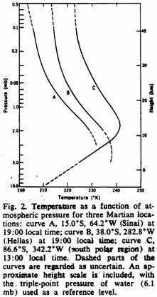
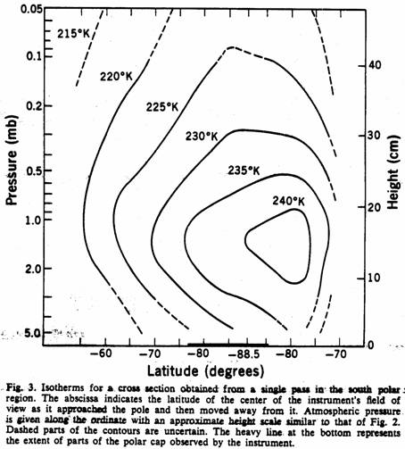
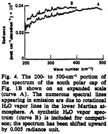

Infrared Spectroscopy Experiment on the Mariner 9 Mission: Preliminary Results
Hanel, R.A., et al.
Science, 175, 305-308, January 1972
Abstract. The Mariner 9 infrared spectroscopy experiment has provided good-quality spectra of many areas of Mars, predominantly in the southern hemisphere. Large portions of the thermal emission spectra are significantly affected by dust with a silicon oxide content approximately corresponding to that of an intermediate igneous rock, thus implying that Mars has undergone substantial geochemical differentiation. Derived temperature profiles indicate a warm daytime upper atmosphere with a strong warming over the south polar cap. Atmospheric water vapor is clearly observed over the south polar area and less strongly over other regions.
The infrared spectroscopy experiment on the Mariner 9 mission was designed to provide information on atmospheric and surface properties by recording a major portion of the thermal emission spectrum of Mars. The original intent was to determine vertical temperature profiles, the surface temperature, and the atmospheric pressure at the surface, and to acquire information related to the surface composition. The experiment also was designed to search for minor atmospheric constituents, including H2O vapor and isotopic components of CO2 (1). The biological implications of the Martian environment were to be studied. Although the Martian dust storm has complicated the task of attaining the scientific objectives originally formulated for a dust-free atmosphere, unexpected information was obtained on the dust composition and on the general circulation associated with the storm.
The Michelson infrared interferometer spectrometer (IRIS-M) records the spectral interval from 200 cm-1 (50 µm) to about 2000 cm-1 (5 µm) with a nominal spectral resolution of 2.4 cm-1 in the apodized mode of data reduction. A noise equivalent radiance of about 5 x 10-8 watt cm-1 steradian-1 has been achieved. The field of view is almost circular with a half cone angle of 2.25 deg. Wave-number calibration is provided by a fringe control interferometer for which the 0.6929-µm line of a Ne discharge source is used as a standard. Intensity calibration is achieved by scaling Mars spectra to calibration spectra recorded periodically during alternate observation of deep space and of a 296.4°K on-board blackbody. After Fourier transformation and scaling of the raw spectra in an Earth-based digital computer, the individual calibrated spectra are displayed in absolute radiometric units as a function of wave number.
On a planetary scale, the Martian spectra obtained so far exhibit a fair degree of uniformity in comparison with similar spectra obtained from the Nimbus satellites for Earth (2). The major exception in the appearance of Martian spectra occurs in the vicinity of the south polar cap. Examples of nonpolar and polar spectra are shown in Fig. 1, A and B, respectively.
-
Major features common to all spectra are the two broad regions at 400 to 600 cm-1 and 850 to 1250 cm-1, which appear in absorption in the nonpolar spectra arid in emission in the polar spectra. and, the molecular absorption by CO2 in the range from 540 to 800 cm-1. The differences in appearance of the spectra may be qualitatively ascribed to differences in the atmospheric temperature profile, the underlying lower boundary surface, and the amount of dust in the atmosphere. In most of the nonpolar spectra, all of the molecular bands of CO2 appear in absorption, an indication that the atmospheric temperatures decrease with height on a gross scale. In the polar spectrum, the parts of the spectrum from 550 to 625 cm-1 and 700 to 800 cm-1 appear in emission, an indication that the lower atmospheric region in which this radiation originates is at a warmer temperature than the underlying surface.
The most striking result of the experiment thus far is the strong effect of the atmospheric dust on the emission spectra. The entire spectrum, with the exception of the strongly absorbing part of the 667-cm-1 (15-µm) CO2 molecular band, apparently is influenced to varying degrees by the opacity of the dust in the atmosphere. A rigorous treatment of spectra from a dust-laden atmosphere must be based on a radiative transfer model which incorporates absorption and. scattering by the dust along with molecular CO2 absorption. Until that treatment can be accomplished, more simplified methods must suffice.
The diffuse features appearing near the 470- and 1075-cm-1 absorption in nonpolar spectra and near the 470- and 1075-cm-1 emission in polar spectra are attributed to dust particles in the atmosphere. The features are characteristic of the SiO2 bands in silicate-bearing minerals. Lyon (3), Hovis (4), Aronson et al. (5), Salisbury et al. (6), and Conel (7) have shown that the spectral position of absorption and reflection peaks depends on the silica content; acidic minerals [70 to 75 percent (by weight) SiO2] suspended in powder form absorb most strongly at 1100 cm‑1, whereas ultrabasic materials (less than 45 percent SiO2) show absorption peaks near 950 cm-1. A preliminary comparison of the emission features measured over the south polar region with the absorption spectra of fine dust measured by Lyon shows generally good agreement with those of minerals and rocks whose SiO2 content is in the intermediate range (55 to 65 percent), but poor agreement with highly acidic (greater than 65 percent) as well as basic (45 to 55 percent) and ultrabasic material. Silicates are also indicated in nonpolar areas. If this result is substantiated by continuing analysis (additional laboratory measurements of emission and absorption spectra of various dust samples, radiative transfer calculations for a scattering and absorbing atmosphere, analysis of additional spectra), its implications are of great planetological significance.
There is at this time no agreement on whether Mars is differentiated [see (8), for example]. The SiO2 content of planetary surfaces is probably the best gross geochemical indicator of the degree of differentiation. Thus, the relatively high SiO2 content indicated by these preliminary results, if representative of the Martian surface, would show that Mars has undergone at least as much differentiation as the moon (9), and perhaps as much as Earth. In this discussion it is assumed that the suspended dust has the same bulk composition as the surface rocks. This assumption is based on the probable absence of extensive chemical weathering on Mars.
The fact that the silicate features associated with the dust appear in emission in the polar spectra confirms that the absorption is produced by dust suspended in the atmosphere rather than the surface itself. The strength of the dust features in the spectra indicates a fairly substantial optical depth for the dust, especially in the regions away from the south polar cap or away from high plateaus.
It has thus far been possible to observe the Martian surface only in the region of the south polar cap, and perhaps over highlands, where the atmospheric dust is sufficiently thin. For quantitative interpretation, it is first necessary to establish the radiance originating from the planetary surface. This radiance, in general, depends on the emissivity of the surface material, the degree of homogeneity of the surface within the field of view in terms of temperature and composition, and the opacity of the dust-filled atmosphere. From a working model, a background radiance curve for the average south polar spectrum shown in Fig. 1B has been calculated and is included in Fig. 1B. In the model it is assumed that an unknown fraction of the field of view is filled with a blackbody emitter at one temperature, whereas the rest of the field of view is filled with a blackbody at a second temperature. The model is based on the fact that the apparent size of the cap is slightly smaller than the IRIS field of view and is heterogeneous in structure. By using measured radiances at 295, 840, and 1330 cm-1, and by assuming that the measured radiances are unaffected by the atmosphere and by the dust in it, a fit was obtained with 65 ± 5 percent of the field containing an emitter at 140° ± 10°K and the remainder of the field filled with an emitter at 235° ± 10°K. This result is consistent with a frozen CO2 cap, in agreement with earlier work (10).
Estimates of the vertical temperature structure of the Martian atmosphere can be obtained from measurements in the 667-cm-1 CO2 absorption band by inversion of the integral equation of radiative transfer. If the atmospheric transmittance is known, the temperature as a function of atmospheric pressure can be derived. Preliminary retrievals of temperature profiles have been made on the assumption that the atmosphere consisted of 100 percent CO2, and on the basis of the neglect of possible additional opacity due to dust. A knowledge of surface pressure is also required for an accurate specification of temperature in the lower atmospheric levels. The apparently near-isothermal structure of the lower atmosphere and the effects of dust opacity have prevented determination of surface pressure from the spectral data. Therefore, use has been made of surface pressure estimates from Earth-based measurement and front Mariner 6 and 7 data in regions where such data exist.
Examples of retrieved profiles are shown in Fig. 2. The profiles over Hellas and Sinai are typical of those obtained from spectra similar to the nonpolar cases of Fig. 1A. Surface pressure was estimated for Hellas from Mariner 7 ultraviolet spectrometer measurements (11) and for Sinai from Earth-based radar measurements (12), which were normalized at coincident points to Mariner 6 ultraviolet spectrometry pressure estimates. The lower lapse rates below 2 mb may be real. However, if the dust has an optical depth in the 15-µm band at this level of approximately unity, a similar effect will result, regardless of the true thermal structure in this region. When the optical depth of the dust is less than unity, the temperature retrieval data will be essentially unaffected by the presence of the dust. As the optical properties of the dust become better understood, the lower portions of the profiles therefore may be subject to revision. The temperatures above 2 mb are generally warmer than either those predicted theoretically for a dust-free atmosphere (13) or those obtained from the Mariner 6 and Mariner 7 occultation experiments (14).

A profile obtained over the south polar cap is included in Fig. 2. The most outstanding feature is the pronounced temperature inversion, which is responsible for the fact that the CO2 bands are seen partly in emission as in the polar spectrum shown in Fig. 1b. Surface pressure estimates are not yet available in this region, but the basic behavior of the profile was essentially unaffected as the surface pressure varied from 5 to 20 mb. Only the profile obtained with a surface pressure of 10 mb is shown. Figure 3 shows isotherms for a vertical cross section along a single scan pass down onto the cap and back off the cap again. The lower part of the diagram is uncertain because of the neglect of dust in the analysis and lack of knowledge of the surface pressure. The cross section shows a highly localized region of warm air at approximately 1 to 2 mb in the vicinity of the cap. The substantial solar illumination during the south polar summer, the reflection of solar energy by the cap, and atmospheric dynamical effects are all possible mechanisms that could produce this effect.

The polar spectra also shows rotational lines of H2O vapor in the region between 200 and 350 cm-1. This portion of the IRIS spectrum from Fig. 1B has been expanded in Fig. 4. Consistent with atmospheric temperatures warmer than surface temperatures, the H2O vapor lines appear in emission. Also shown in Fig. 4 is a synthetic slant path spectrum composed by the use of the two-surface temperature model described above. The excellent spectral correspondence of atmospheric H2O vapor in the south polar region. Spectral features of H2O vapor appear more weakly over other regions of the planet. Possible reasons for the fact that H2O vapor is not more prominent there may be sought in the near-isothermal nature of the temperature profiles, the shielding effect of the dust, or possibly a lower H2O vapor concentration away from the south pole.

R.A. HANEL, B.J. CONRATH, W.A. HOVIS, V.G. KUNDE,
P.D. LOWMAN, J.C. PEARL, C. PRABHAKARA, B. SCHLACHMAN
Laboratory for Planetary Atmospheres, Goddard Space Flight Center,
Greenbelt, Maryland 20771
G.V. LEVIN
Biospherics Incorporated, Rockville, Maryland 20853
References and Notes
1. R.A. Hanel, B.J. Conrath, W.A. Hovis, V.G. Kunde, P.D. Lowman, C. Prabhakara, B. Schlachman, G.V. Levin, Icarus 12, 48 (1970).
2. B.J. Conrath et al., J. Geophys. Res. 75, 5831 (1970).
3. R.J.P. Lyon, Nat. Aeronaut. Space Admin. Tech. Note D-1871 (1964); Nat. Aeronaut. Space Admin. Contract Rep. CR-100 (1964).
4. W.A. Hovis, Appl. Opt. 5, 245 (1966).
5. J.R. Aronson, A.G. Emalie, R.V. Allen, H.G. McLinder, J. Geophys. Res. 72, 687 (1967).
6. J.W. Salisbury, R.K. Vincent, L.M. Logan, G.R. Hunt, ibid 75, 2671 (1970).
7. J.E. Conel, ibid 74, 1614 (1969).
8. T.C. Hands and D.L. Anderson, Phys. Earth Planet. Inter. 2, 19 (1969); A.E. Ringwood and S.P. Clark, Nature 234, 89 (1971).
9. P.D. Lowman Jr., J. Geol., in press.
10. R.B. Leighton and B.C. Murray, Science 153, 136 (1966); G. Neugebauer, G. Münch, H. Kieffer, S.C. Chase, E. Miner, Astron. J. 76, 719 (1971); K.C. Herr and G.C. Pimental, in “Mariner Mars 1969: A Preliminary Report” (National Aeronautics and Space Administration, Washington, D.C., 1969), p. 83.
11. C.W. Hord, Icarus, in press.
12. G.H. Pettengill, A.E.E. Rogers, I.I. Shapiro, Science 174, 1321 (1971).
13. P. Gierasch and R. Goody, Planet. Space Sci. 16, 615 (1968).
14. S.I. Fasool and R.W. Stewart, J. Atmos. Sci. 28, 869 (1971); A.J. Kilore, G. Fjeldbo, B.L. Seidel, in Space Research XI (Akade-mie-Verlag, Berlin, 1971), p. 165.
15. The following people contributed substantially to the success of the Mariner 9 IRIS experiment: D. Crosby, R. Gerace, W. Maguire, W. Miller, L. Purves, and N. Spencer of the Goddard Space Flight Center; T. Burke, H. Eyerly, and J. Taylor of the Jet Propulsion Laboratory; E. Breihan, R. Bywaters, D. Rodgers, D. Vanous, and L. Watson of Texas Instruments, Inc.; W. Andrews, R. Bevacqua, and R. Long of Consultants and Designers, Inc.; and P. Straat of Biospherics Incorporated.
27 December 1971